Scan2USD
Scan-to-Sim asset pipeline: phone photos of everyday objects in, physics-ready OpenUSD assets out, verified in NVIDIA Isaac Sim and MuJoCo, and rendered in Unreal Engine.
Phone photos, a color chart, and a guide to the next shots
Mesh, calibrated color and scale, mass, convex colliders, USD
33 checks plus NVIDIA SimReady on the file, two physics engines, ground truth
Robot picks, synthetic training data, renders in Isaac Sim and Unreal
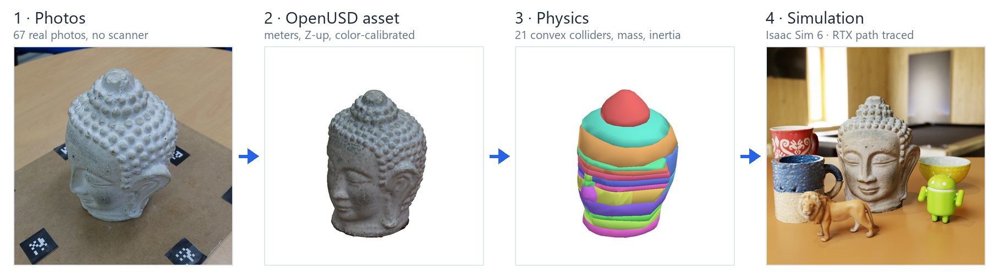
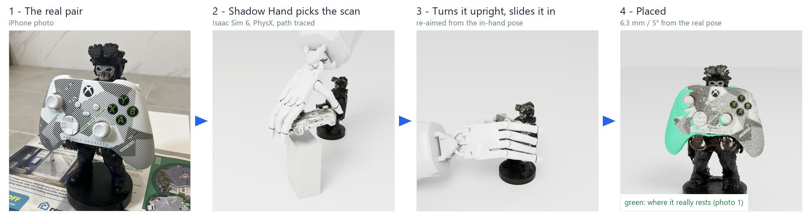
Watch the 147-second demo · from phone photos to robots placing the scans, in MuJoCo, Isaac Sim and Unreal
Architecture
Phone photos
Orbit the object at two or three heights with lots of overlap, on a textured table. The benchmark renders the same kind of capture in Blender, so every scan has a true mesh to score against.
- 78 photos per benchmark object, 6 objects
- 0.78 mm mean surface error (speckled mug)
blender_render_capture.pymake_synthetic_capture.pystudy_photo_count.pyReferences
A ColorChecker (or an 18% gray card) in some photos is found automatically. Its patch spacing also gives metric scale, no ruler needed. A kitchen scale gives mass; a tape measure is the fallback for size.
- chart color error ΔE2000 ~8 → 1.3
- size error ≤ 1.43% from the chart alone
color.pychart.pyeval_chart_scale.pyCapture guide
Reads the asset's uncertainty and lists camera positions that would see the physics-relevant surface no photo saw twice. Work in progress.
- 8 extra photos, rendered where asked
- helps the bowl; not the printed mug (its white inside is visible but textureless)
guide.pystudy_capture_guide.pyscan2usd guidescan2usd pipeline
COLMAP structure-from-motion and multi-view stereo → table plane to z = 0 → object isolated → Poisson surface. Then repair, meters and Z-up, decimate, bake 2K albedo + normal maps, correct color, set metric scale, split into convex hulls (CoACD) and compute mass, center of mass and inertia. Optional: carve out space the photos see through, or split a scan into parts on a revolute joint.
- controller holder: 64 convex pieces
- one command: scan2usd scan photos\ -o out\
pipeline.pyreconstruct.pymesh_ops.pybake.pycolor.pyphysics.pycarve.pyarticulation.pyOpenUSD asset
One file: render mesh with a PBR look, convex-hull colliders with a physics material, rigid body, mass and inertia. Codeless USD schemas add tested grasps, property intervals (mass, scale, friction) and per-vertex observed / inferred / sealed labels. Optional Gaussian splat for the look. Many assets become one library with collision and friction variant sets.
- true mass inside the stored interval: 5/6 objects
- 756 grasp re-tests stored
- also exported as glTF and MuJoCo MJCF
usd_io.pyschemas.pyuncertainty.pysplat.pylibrary.pymjcf.pyValidator
Opens the written file the way a simulator would and checks it: USD units and up axis, textures resolve; geometry watertight, consistent winding, plausible size, resting on z = 0; hulls convex, ≤ 255 vertices, matching the render mesh; mass, inertia (triangle inequality), center of mass, density; drop tests settle. Packaged for NVIDIA SimReady, every asset also passes its Robotics-Prop profile (NVIDIA's validator).
- 33 checks on every asset
- SimReady Robotics-Prop: 11/11 packages pass
validate.pysimulate.pyscan2usd validatesimready.pyscan2usd simreadyGround truth
Aligns each scan to its true mesh, then measures surface accuracy, completeness, F-score and volume, and color error on the chart before and after correction. Image-to-3D meshes are scored the same way.
- mean error 0.60–3.03 mm over 6 objects
- F-score @2 mm up to 0.94
- one photo, Hunyuan3D 2.1: F 0.804 vs 0.786 (78 photos)
evaluate.pyrun_benchmark.pyevaluate_synthetic.pystudy_generative.pyReal-world check
A controller holder and a controller, scanned alone and together. Registering the scans gives the real resting pose: the answer key. The scanned controller is dropped into the scanned holder, then placed by robots.
- drop: 12/12 held, median 9.1 mm (MuJoCo); 11/12 in Isaac Sim
- holder as one convex hull: 0/12
- scans agree on scale within 1.2%
study_holder_fit.pyregister.pyisaac_holder_fit.pyPhysics + robots
MuJoCo and Isaac Sim PhysX run the same assets. A Franka Panda pinches the controller and seats it in the holder (MuJoCo IK, replayed on Isaac's Franka); a Shadow Hand pinches it top to bottom as a person does, and a small network learns that from the script in Isaac Lab; the Panda picks the scanned mug; an articulated lid opens on its joint.
- Panda: 12/12 MuJoCo, 12/12 Isaac Sim (7.2 mm)
- Shadow Hand: 12/12 MuJoCo, 12/12 Isaac Sim
- learned policy (Isaac Lab): 400/400 fresh scenes
- holder as one convex hull: every placement fails
demo_holder_place.pyisaac_holder_place.pydemo_hand_pinch.pyisaac_hand_place.pyrl/train_policy.pydemo_panda.pyisaac_franka_pick.pyPerception
Isaac Sim Replicator renders the scanned assets under random lights, poses and distractors, with labels. A detector trained only on those finds the object in real photos, then drives a see-locate-pick loop.
- 67/67 real photos (59/67 without distractors)
- 10/10 picks, 0.6 mm median pose error
isaac_synthdata.pyreplicator_to_coco.pytrain_detector.pydemo_perception_pick.pyRendering + library
Isaac Sim RTX path traces the assets with PBR look presets. Unreal Engine 5.8 imports the same USD stage as is (Lumen + MegaLights, Sequencer). The Gaussian splat gives a photo-real look. The library catalog and 3D gallery are on the web.
- MegaLights: 8.8 ms per frame vs 14.8 ms
- splat beats the mesh on 18/18 unseen photos
isaac_pathtrace.pyunreal_render.pyunreal_hand_render.pymake_gallery.pymake_catalog.pyHover (or tap) a box for its operations, numbers and scripts.
Four stages around one file. Photos and references become an OpenUSD asset; it is checked three ways, and the same file goes to every simulator and renderer. What the scan couldn't see feeds back into which photos to take next. Module-level detail: the README's stage table.
Real-world check: scan, simulate, compare
My own iPhone photos of a controller holder and a controller, each scanned alone, then photographed together. The combined scan is the answer key: does the simulated controller settle where the real one sits?
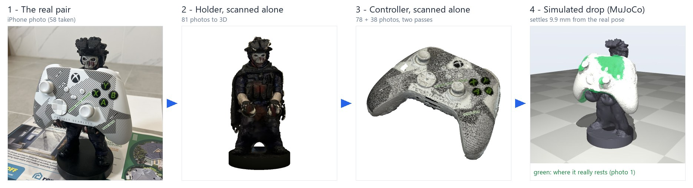
One photo of the real pair, each object scanned on its own, and the simulation that puts them back together.
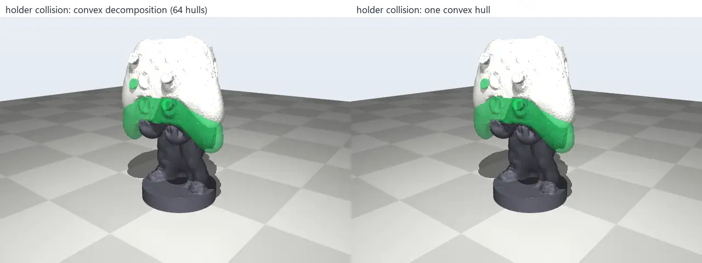
MuJoCo. The controller is released 3 cm above its real pose; green is where it really rests. Left: the holder's 64 convex pieces form cupped hands that catch it. Right: one convex hull turns the hands into a smooth bulge, and it slides off.
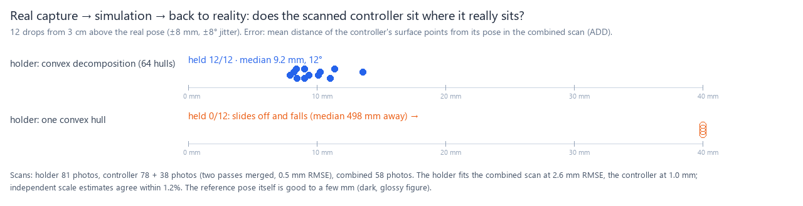
12 drops with ±8 mm / ±8° jitter. Decomposition: held 12/12, median 9.1 mm / 11° from the real pose (released 31 mm away). One hull: 0/12 held.
Same drop in Isaac Sim 6 (PhysX)
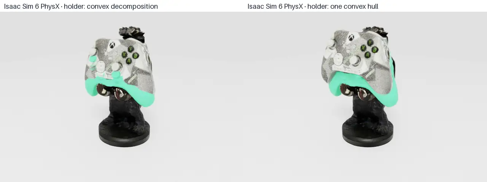
Same assets, same releases: 11/12 held, median 9.0 mm / 13°. One hull: 0/12. scripts/isaac_holder_fit.py
A robot puts it there: Franka Panda places the controller (MuJoCo)
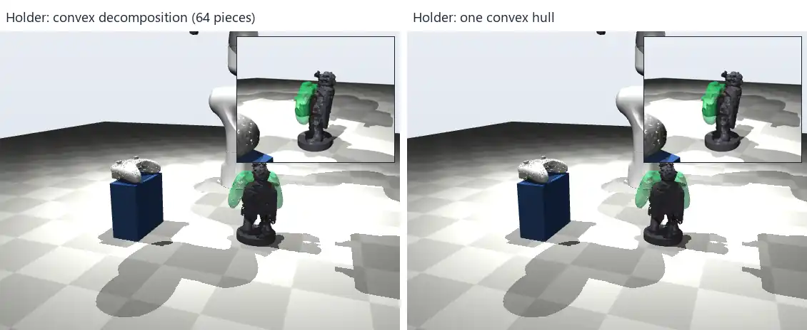
Instead of a drop, the Panda picks the controller off a tray by a corner of its top edge, turns it upright and sets it down 5 mm above the measured pose. 12 trials, tray and holder moved ±2 cm / ±10°: 12/12 held, median 4.7 mm / 8° from the real pose. One convex hull: 0/12. scripts/demo_holder_place.py
The same plans in Isaac Sim 6 (PhysX)
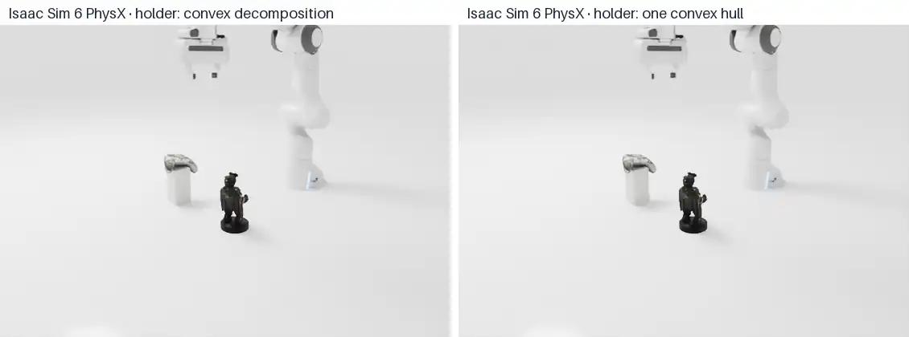
MuJoCo's joint plans, replayed on Isaac Sim's Franka: 12/12 held, median 7.2 mm / 9°; one hull: 0/12. It first held 1/12: hanging 6 cm off the pinch, the controller spun out of the pads. The fix was matching the contact model, not more friction: MuJoCo's pads resist spin (torsional friction), PhysX needed a torsional patch radius for the same. A flat start and a pinch 5 mm deeper did the rest. scripts/isaac_holder_place.py
Path traced with the other scans (Isaac Sim 6 RTX)
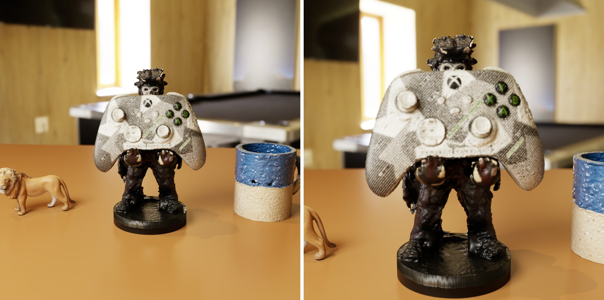
The phone-scanned pair in its measured pose, path traced beside two benchmark scans. isaac_pathtrace.py --shots real
How the answer key is made
- Scale from two tape measurements; the combined scan agrees within 1.2%.
- Two controller passes merged by similarity ICP (0.5 mm RMSE).
- Ground truth: both assets registered into the combined scan (holder 2.8 mm, controller 1.0 mm RMSE), so the settle error is an upper bound.
- Leg gap: Poisson filled in the space between the figure's legs; it's carved back out where the photos see background through it (before/after).
scripts/study_holder_fit.py·register.py·carve.py

Robotics demos
Franka Panda pick-and-place (MuJoCo Menagerie robot)

Rim grasp with one finger inside the scanned mug, placed 25 cm away (11 mm error). Right: one convex hull gives the mug a phantom lid, and the pick fails.
Same pick in Isaac Sim 6: one plan, two physics engines
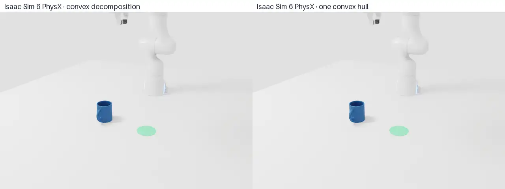
The same joint plan on Isaac Sim's Franka with PhysX contacts: placed within 5.5 mm. The convex_hull variant fails here too.
Articulated asset, two engines
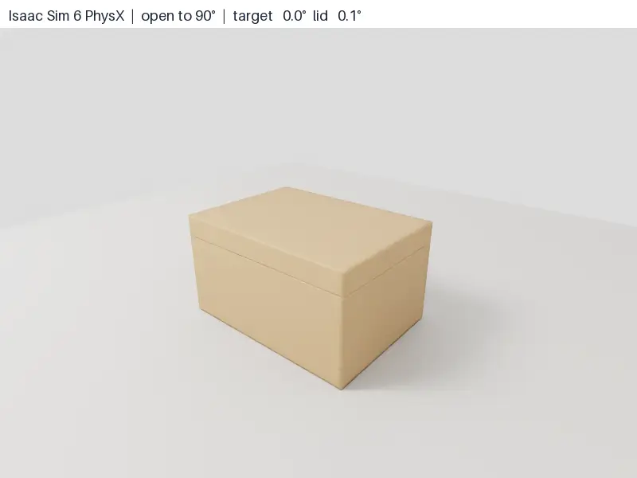
One scan, a seam plane and a hinge line → base and lid with a USD revolute joint (0–105°). PhysX tracks a 90° command to 90.1° and stops at the limit. MuJoCo version.

Bin of scanned objects

14 object instances, 392 convex colliders: all end in the tote and settle; resting penetration 0.08 mm.
USD asset library in Isaac Sim
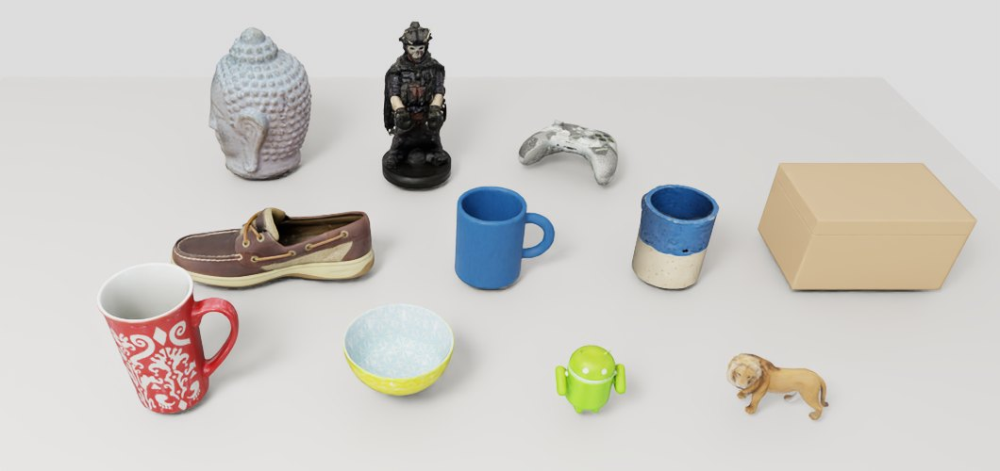
11 assets (including the two phone scans) as payloads with collision and friction variant sets (catalog). Every variant settles in PhysX, about 2 ms per step.
Dexterous grasping: Shadow Hand
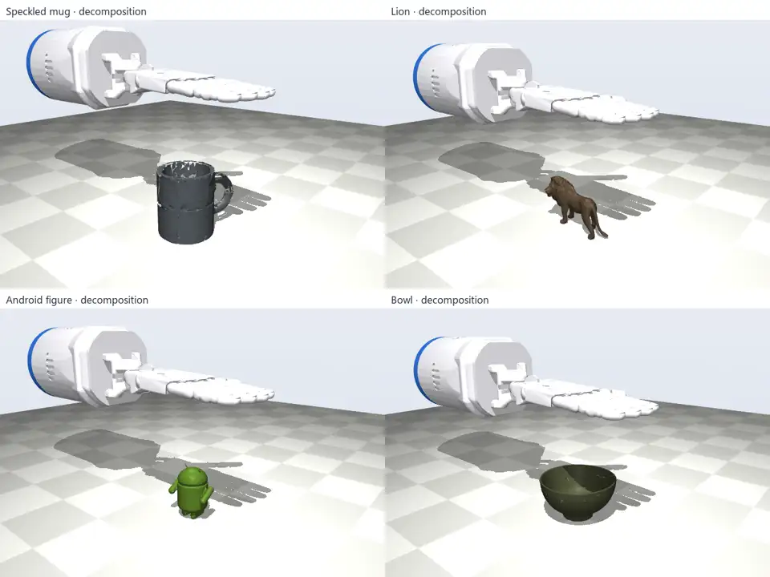
The 24-joint Shadow Hand lifts scanned objects and survives a ±2 cm / 3 Hz shake.
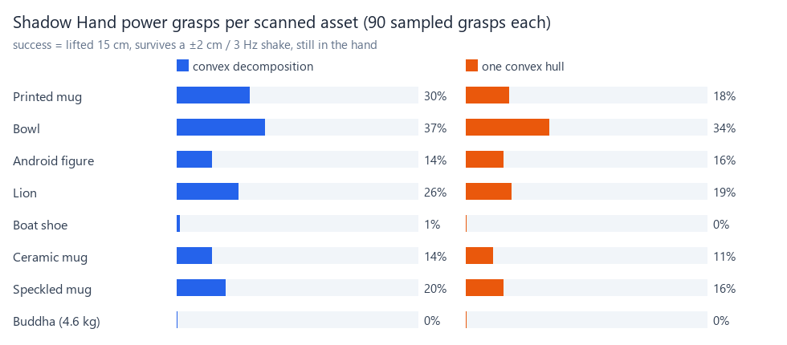
A benchmark for comparing assets, not a grasp planner: 1,440 random power grasps over 8 assets. Convex decomposition holds more than one hull (23.5% vs 18.9%), and grasps from above beat the side (34% vs 4%).
Isaac Sim 6, GPU PhysX. The Shadow Hand holds the controller the way a person picks it up: index and middle on the top rim, thumb under the bottom edge (contacts found on the scan, hand pose solved to reach them). It carries it into the holder's hands, re-aiming from the in-hand pose on the way. Shown: benchmark seed 0 in the 400-cell film's scene. 12 jittered trials in PhysX: re-aimed 12/12, 10.5 mm / 16°; open loop 5/12; one convex hull for the holder 0/12 (MuJoCo: 12/12, 7.4 mm / 11°). The videos in this chapter leave out the forearm housing so it doesn't hide the scene; it is still simulated. scripts/demo_hand_pinch.py · isaac_hand_place.py · rl/scripted_rollout.py
Unreal Engine 5.8, Lumen + MegaLights. The same pinch, simulated in MuJoCo and rendered frame for frame, with 108 shadow-casting fairy lights. scripts/unreal_hand_render.py
Learned: a small neural network does it, 400 scenes at once (Isaac Lab)
The scripted pinch, taught to a network (an MLP, 3 × 512) that drives the hand 30 times a second: the wrist pose and 24 finger targets. It sees the simulator's exact state: the clock, where the controller started, where it belongs and, once the script would re-aim, the controller itself. Isaac Lab on GPU PhysX: 2,048 demonstrations by the scripted hand, behavior cloning, then 10 rounds of DAgger (the network drives, the script labels what it should have done). On 400 fresh random scenes it places 400/400, 8.7 mm / 14° (the script: 9.3 mm / 15°); in the video, 400/400 (rendered without the forearm housing, so the grid behind shows through; the physics keeps it). What it took: no hand state in its input (with it, cloning learns to copy the hand's own pose and drifts off), targets in the controller's start and goal frames, and Fourier features of the clock (grasp-time error 0.24 mm instead of 2 mm). 22 minutes of training on one RTX 4090, peaking at 246 W. Trial-and-error fine-tuning (RL) comes next. scripts/rl/train_policy.py · policy.py · scripts/rl/checkpoints/
Before it was perfect, and where it breaks
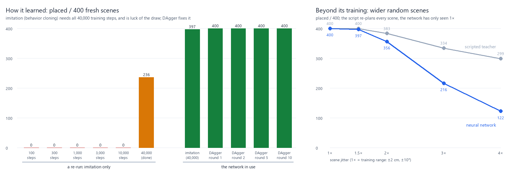
Part-way: 3,000 of 40,000 steps. It knows roughly where to go, not how to hold: 0/400.
Imitation only, before DAgger. It drops the controller where the demonstrations never went: 226/400.
The final network, 3× wider scenes than it trained on (±6 cm, ±30°): 202/400.
Every stage on the same 400 fresh scenes. Imitation alone places 0/400 until it has trained long enough, then 236/400 in a re-run from the same demonstrations; the network in use got lucky with 397/400. One DAgger round makes it 400/400, and it stays there. Beyond its training range, the script (it re-plans every scene) degrades gently, 299/400 at 4×; the network drops faster, 356/400 at 2× and 122/400 at 4×, having only seen 1×. Wider training scenes or RL are the fix. scripts/rl/eval_sweep.py · plot_learning.py
Sim-to-real perception
Train on synthetic images, test on real photos
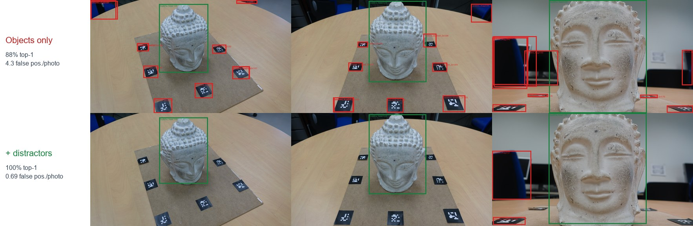
A detector trained only on Isaac Sim renders of the scanned assets, on real Buddha photos it never saw. Green: the Buddha. Red: false detections. Without distractors in training, markers and chairs become “mugs”.
The training data
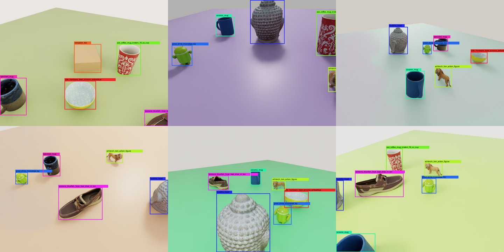
Each frame randomizes the assets, table, lights and camera, plus unlabeled distractors. 1,000 labeled frames in 3.5 min.
Results
| Training data | Synthetic mAP@0.5 | Real: Buddha is top detection | Real: false positives / photo |
|---|---|---|---|
| Objects only | 1.00 | 59/67 (88%) | 4.30 |
| + distractors | 1.00 | 67/67 (100%) | 0.69 |
Synthetic validation saturates either way; only real photos show the gap. Trained in 5.5 min on an RTX 4090.
Closing the loop: see it, locate it, pick it
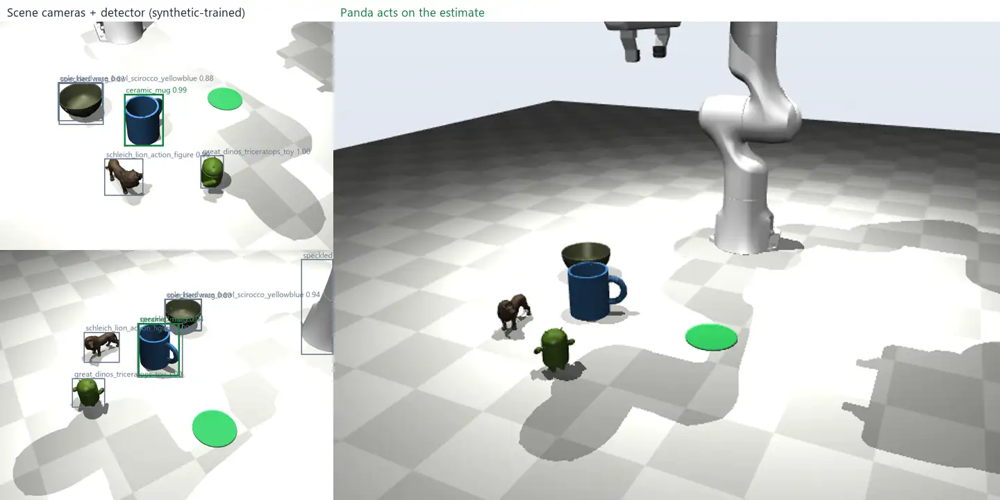
In MuJoCo the lion lands at a random pose among other scans. The synthetic-trained detector finds it in RGB-D, the scanned mesh is fitted to the depth, and the Panda picks at the estimated pose: 10/10, median error 0.6 mm / 0.3°. The scan is used three times: training images, pose model, physics.
How accurate must a scan be?
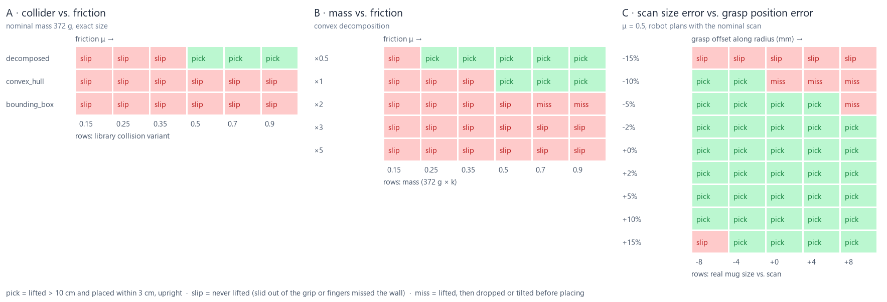
93 simulated Panda picks, planned on the nominal scan while the “real” mug differs. A: collision geometry decides it; one hull or a bounding box fails at every friction. B: doubling the mass breaks the grip, so weigh the object. C: ±5% size error is tolerated; the ColorChecker's ≤1.43% is well inside.
Photos → USD, scored against ground truth

A fake phone capture rendered in Blender: 78 photos in 3 rings plus top views, warm light, ColorChecker in the scene, known camera poses and shape.

Same mug, two glazes. Photogrammetry needs surface texture: the plain dark glaze leaves holes; the speckled one reconstructs to 0.8 mm.
Texture baking: 1.3M → 50k triangles, same look
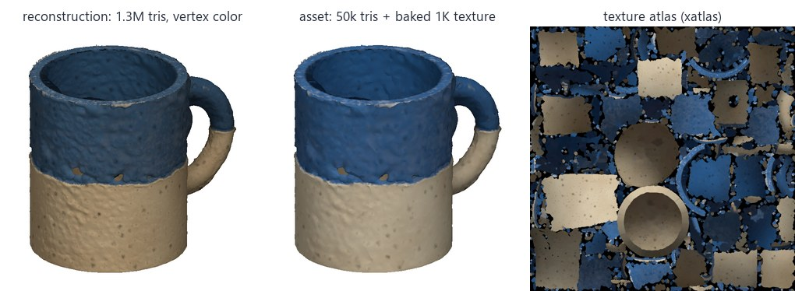
The dense reconstruction is decimated, UV-unwrapped and its color baked into a 1K texture: 26× fewer triangles.
Real photos: 67 shots of a stone Buddha head (AliceVision dataset, CC-BY 4.0)

All 67 photos registered, the marker board removed automatically: a watertight head with 21 convex colliders, in one scan2usd scan command.
Benchmark
| Object | Accuracy mean / p95 (mm) | Completeness mean (mm) | F-score @2 mm | F-score @2 mm, above base | Volume error | Chart ΔE2000 |
|---|---|---|---|---|---|---|
| Speckled stoneware mug (procedural) | 0.78 / 2.87 | 0.64 | 0.934 | 0.921 | +11.8% | 7.6 → 1.31 |
| Printed coffee mug | 2.00 / 10.20 | 2.38 | 0.731 | 0.748 | +191.5% | 8.0 → 1.30 |
| Ceramic bowl | 3.03 / 9.61 | 2.34 | 0.494 | 0.524 | +82.0% | 7.8 → 1.32 |
| Android figure toy | 0.78 / 3.08 | 0.96 | 0.872 | 0.894 | +1.4% | 7.7 → 1.38 |
| Lion figure | 0.60 / 2.41 | 0.62 | 0.941 | 0.935 | +8.2% | 8.0 → 1.29 |
| Boat shoe | 1.73 / 7.20 | 2.53 | 0.747 | 0.739 | +32.2% | 8.9 → 1.31 |
- Textured objects reconstruct to 0.6–0.8 mm, volume within 1–12%.
- Sealed surfaces: what no camera can match or see (the printed mug's white interior, the bowl's underside, the shoe's inside) gets closed over, inflating volume, as the cross-sections show. Fix it in the capture, or give a measured
--mass.
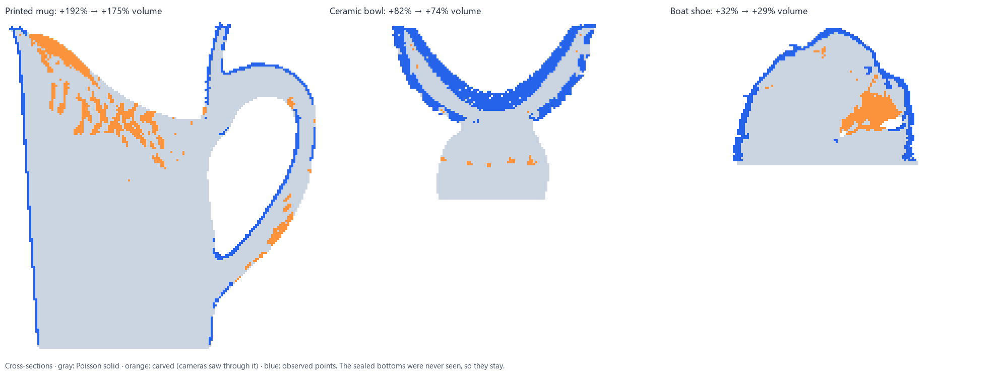
78 rendered photos per object → COLMAP → Scan2USD, scored against Google Scanned Objects (CC-BY 4.0) and a procedural mug. F-score: share of both surfaces within 2 mm of each other.
How many photos are enough? (lion figure)
| Photos | Registered | Accuracy | F-score @2 mm | Time |
|---|---|---|---|---|
| 12 | 8 | 8.05 mm | 0.10 | 40 s |
| 20 | 19 | 0.80 mm | 0.90 | 108 s |
| 39 | 39 | 0.61 mm | 0.92 | 238 s |
| 78 | 78 | 0.60 mm | 0.94 | 480 s |
Too few and the cameras can't be solved; past ~40, extra photos mostly buy completeness.
Metric scale from the chart (no ruler)
| Object | Chart views used | Scale error |
|---|---|---|
| Speckled mug | 20/22 | +0.96% |
| Printed mug | 20/24 | +0.62% |
| Bowl | 9/12 | −0.91% |
| Figure | 23/26 | +0.42% |
| Lion | 24/26 | +1.43% |
| Shoe | 35/43 | +0.35% |
A ColorChecker in the scene is also a ruler: its patches are 16 mm apart on the Mini.
Generated vs scanned: is one photo enough?
Image-to-3D models now turn a photo into a mesh in under a minute. Three open ones get photos from the same captures, and their meshes go through the same build (the same one measured height, convex decomposition and density) and the same yardsticks as the scans.
The real pair, generated: the controller still lands in the hands
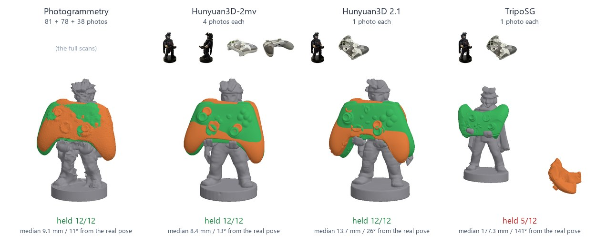
Phone photos of our own controller and holder. With four photos per object, Hunyuan3D-2mv's pair holds 12/12 drops at 8.4 mm from the real pose (photogrammetry: 12/12, 9.1 mm), 36/36 over 3 generation seeds. From one photo, Hunyuan3D 2.1 holds 12/12 at 13.7 mm (35/36 over 3 seeds); TripoSG's controller comes out misshapen and varies by seed (5/12, 26/36 over 3 seeds). Green: the real pose.
Looks: plausible, not measured
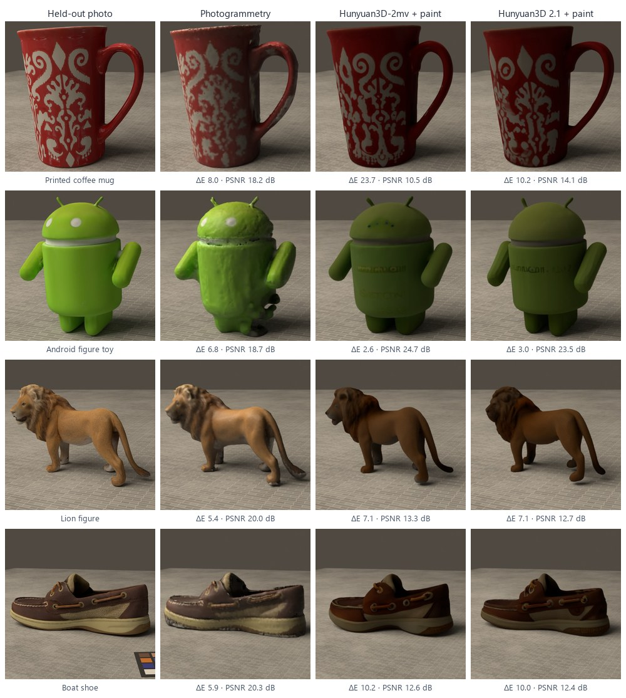
Each textured asset re-photographed in the capture's own Blender scene from 8 held-out cameras, on five of the six benchmark objects (Google Scanned Objects): those whose ground truth, re-rendered the same way, reproduces the photos (37–42 dB; the procedural mug's capture predates a change in the scene and doesn't). Hunyuan3D-2.1's paint model gives plausible textures but not the object's colors: ΔE 10.0 vs 6.8 for photogrammetry's chart-calibrated ones (which saw these photos, so the comparison favors them). It also invents detail, like lettering on the Android figure.
Six benchmark objects: surface error vs ground truth
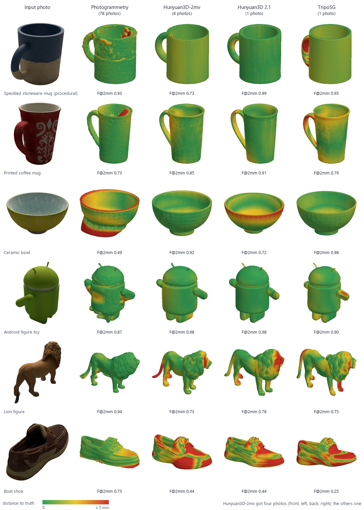
| Source | Mean F-score @2 mm | Median mass error | Real pair: drops held | Look: ΔE / PSNR | Time per object |
|---|---|---|---|---|---|
| Photogrammetry (78 photos) | 0.786 | 22% | 12/12 | 6.8 / 18.7 dB | 620 s |
| Hunyuan3D-2mv (4 photos) | 0.773 | 7% | 12/12 | 9.5 / 13.3 dB | 47 s |
| Hunyuan3D 2.1 (1 photo) | 0.804 | 4% | 12/12 | 10.0 / 14.1 dB | 48 s |
| TripoSG (1 photo) | 0.771 | 8% | 5/12 | (shape only) | 22 s |
Every mesh scaled to the same one measured height. The generators win on smooth objects and on what no camera sees: they don't seal a bowl's underside or a mug's white interior, so their mass is closer (photogrammetry's +82% and +192%). They lose on fine detail (the lion) and guess the shoe's proportions. Hunyuan3D 2.1 beats 78 photos on 4/6 objects. Time: photogrammetry's COLMAP and build vs shape generation (the same build comes on top), one RTX 4090, 6–8 GB.
- Physics: for simple, smooth objects, a generated mesh is as usable as a scan, and from four photos it seats the controller as well as about 200. Fine or unusual detail still needs photogrammetry.
- Scale and gravity: no model outputs metric size or which way is up. One tape measurement sets the size; a photo from above tilts the result (TripoSG's controller).
- Caveats: the benchmark objects are Google Scanned Objects, which may be in the models' training data, and their inputs are clean renders; the real pair (our own objects, phone photos) is the fairer test. Benchmark: one seed.
- How it runs: on Windows with no compiler. The texture model's CUDA rasterizer is replaced by a pure-PyTorch one,
genai_raster.py.
scripts/study_generative.py · genai_generate.py (Hunyuan3D 2.1 / 2mv, Tencent Hunyuan Community License; TripoSG, MIT)
Industry standard: NVIDIA SimReady
NVIDIA's SimReady Foundation turns "simulation-ready" into testable requirements (each with an ID, such as VG.027 "meshes have normals"), grouped into features and bundled into profiles. Robotics-Prop is the contract for objects a robot handles. Every asset in the library is checked with NVIDIA's own validator (simready-validate 2026.8.0, core tier), against profile 4.0.0: 9 required features, 16 optional.
As built 0/11, as a SimReady package 11/11
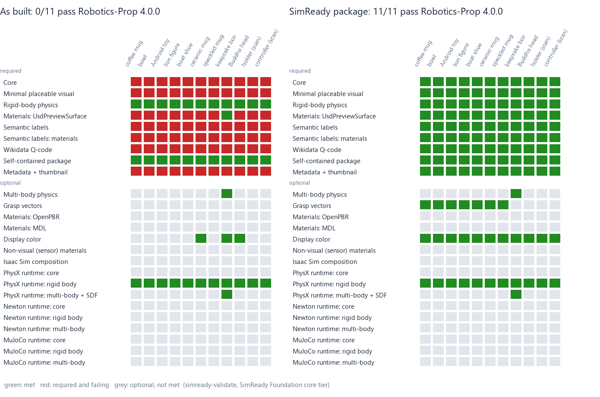
The physics already passed: rigid bodies, colliders and mass, plus the PhysX rigid-body runtime variant. What was missing is what a large, shared asset library needs, and scan2usd simready adds it to a copy of each asset:
- Layout:
<name>/simready_usd/sm_<name>_01.usda, its textures inside, a 256×256 thumbnail. No spaces anywhere in the path: NP.003 checks every folder of the absolute path, so even a project folder named "Local Projects" fails. - Semantic labels with USD's own
LabelsAPI: what the object is, its Wikidata Q-code (mug: Q386215, looked up for each asset) and what it is made of, on every material. These keys drive segmentation ground truth in synthetic data. - Provenance in the file: author, license, category, source, mass, extents, rigid-body count.
- Two genuine spec slips, now fixed in the builder too: collision hulls had no normals (VG.027), and texture and vertex-color nodes typed their output
color3fwhere the UsdPreviewSurface spec saysfloat3(VM.PS.001). The project's own 33 checks didn't cover either. - Optional features met: grasp vectors on 7/11 (a line from each of our stored, tested grasps through the object; the other four have no stored grasps), display color on 11/11, multi-body physics for the articulated box.
- Not yet: MDL and OpenPBR materials, non-visual (sensor) materials, the MuJoCo and Newton runtime variants, and Isaac Sim composition, all optional.
- One finding: SL.MAT.001's text excludes physics materials, but its checker (2026.8.0) asks every material for a label. The physics material is the same stuff, so it gets one too.
Reproduce: pip install simready-validate simready-foundation-tier-core (its own Python 3.12 venv), then scan2usd simready asset.usda -o D:/packages --category mug --qcode Q386215 --material ceramic --license Apache-2.0 --validate. src/scan2usd/simready.py · scripts/study_simready.py
Rendering: Isaac Sim and Unreal Engine
Same USD files in Unreal Engine 5.8: Lumen + MegaLights
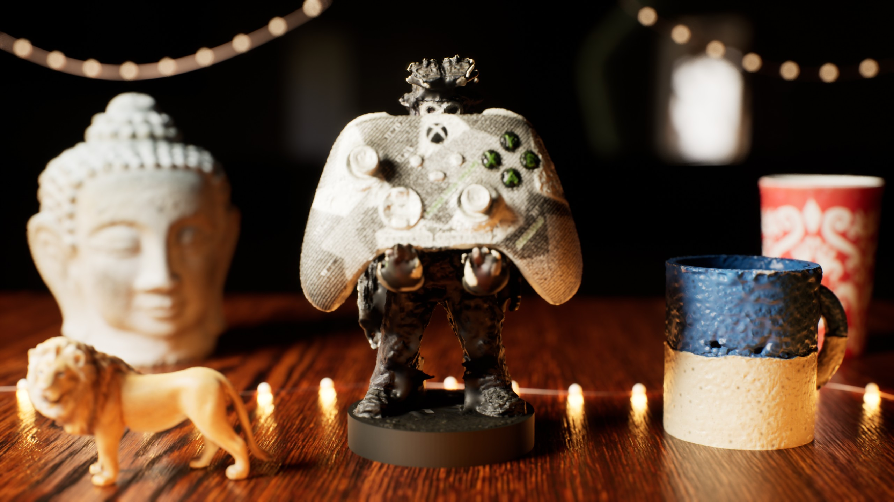
One USD stage: the scans by reference, a wood table and 80 shadow-casting fairy lights, imported unchanged. Lumen gives the bounce light, MegaLights a soft shadow for every bulb. Scripted build and render. 10-second orbit.
What MegaLights buys: 8.8 vs 14.8 ms GPU per frame
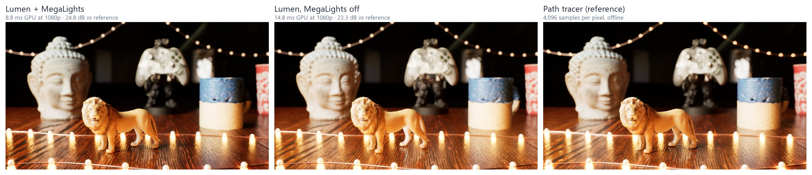
Median GPU frame at 1080p on an RTX 4090. MegaLights samples the lights stochastically instead of drawing a shadow map per light: about 40% less GPU time, and slightly closer to Unreal's path tracer (PSNR 24.8 vs 23.3 dB).
Scanned assets in Isaac Sim 6 RTX
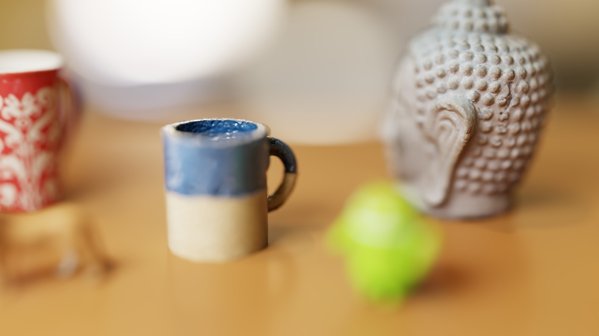
Path traced with HDRI and an area light, physical 50 mm f/5.6 depth of field, PBR look presets and baked 2K albedo + normal maps. Real-time vs offline.

High-to-low normal map bake
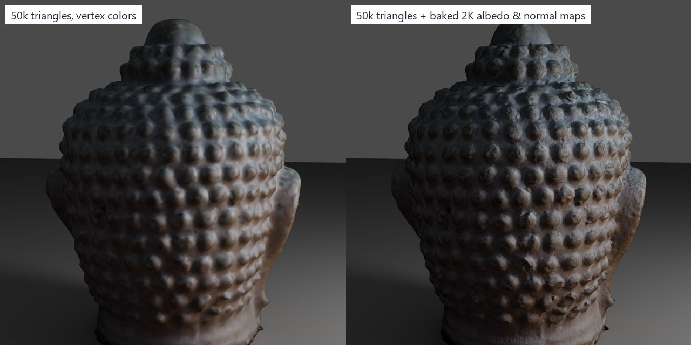
4.3M-triangle scan → 50k triangles. Left: vertex colors only. Right: the scan's detail baked into a normal map, under grazing light.
Look-dev against a real photo
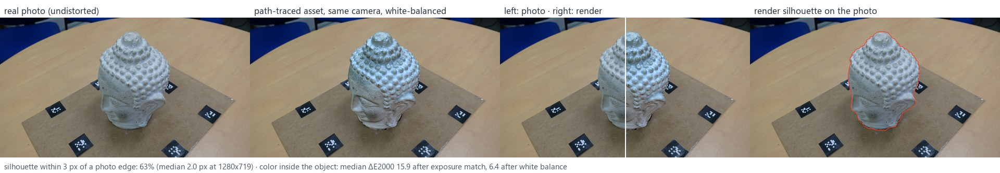
Rendered from the photo's solved camera: 63% of the silhouette lies within 3 px of the photo's edges, which checks geometry, scale and camera at once.
Assets that know what they don't know
Scan-to-sim tools usually output one confident mesh. These assets also store what the camera actually saw, what was guessed, how to hold them, and how they really look: all inside the USD file, where any simulator can read it.
Uncertainty in the asset (Scan2UsdUncertaintyAPI)
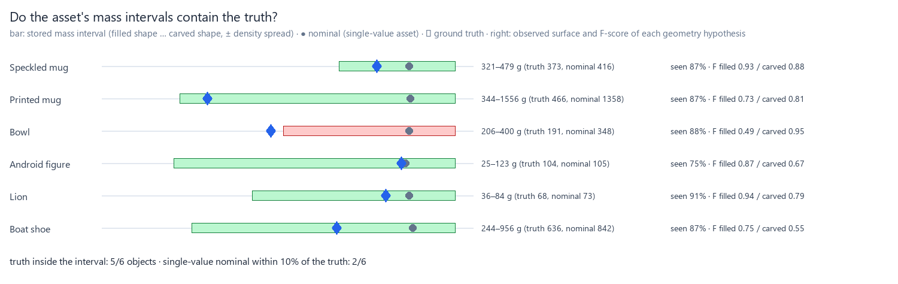
Every vertex is labeled observed, inferred or sealed. Mass, scale and friction are stored as intervals, plus a carved hypothesis that assumes unseen cavities are empty (bowl F-score 0.49 → 0.95).
Grasps in the asset (Scan2UsdGraspAPI)
Grasp poses with their tested success rate per gripper and collision variant. Isaac Sim's Franka reads the best one and picks (5.5 mm). Randomizing physics within the stored intervals predicts real grasp success better than the nominal asset (Brier 0.12 → 0.05).
Hybrid asset: Gaussian splat for looks, hulls for physics
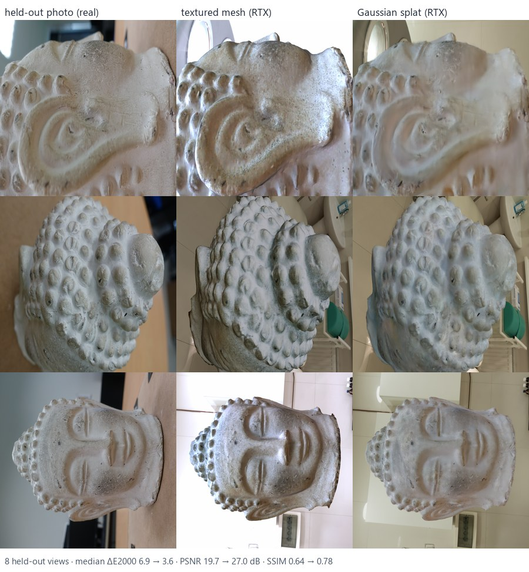
A splat trained on the same photos, masked by the mesh's silhouettes, rides on the rigid body as a UsdVol.ParticleField3DGaussianSplat. On 8 real photos it never saw: PSNR 19.7 → 27.0 dB.
Splats ride on PhysX
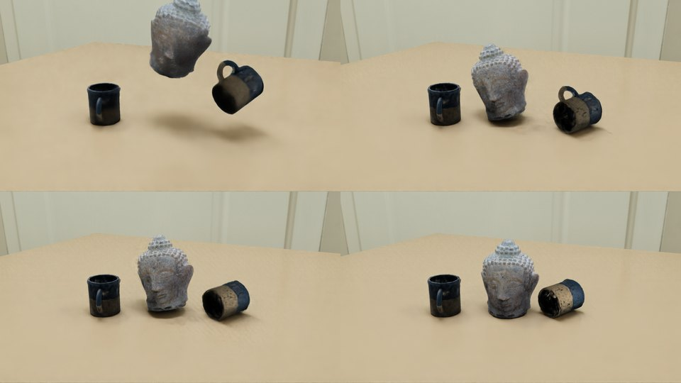
Splat Buddha and mugs fall on their convex hulls in Isaac Sim RTX; a hidden copy of the mesh casts their shadows. Video · Franka picks a splat mug.

Capture guidance: which 8 photos next? (work in progress)
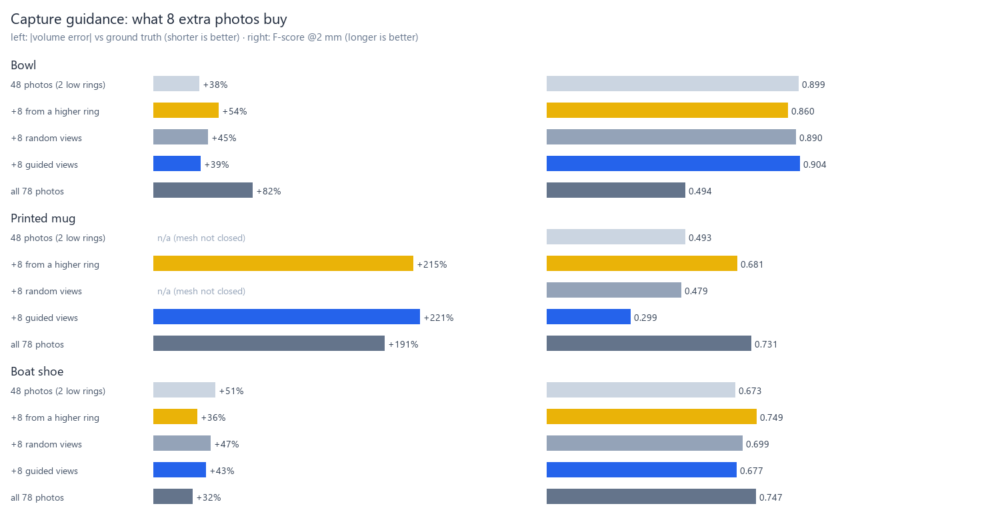
scan2usd guide lists camera positions that would see the physics-relevant surface no photo saw twice. Tested with 8 photos rendered exactly where asked: it wins on the bowl and loses on the printed mug, whose white interior is visible but textureless. Next: score views by texture too.
Color calibration

Each patch: as captured · corrected · reference, with ΔE2000.
What each reference buys you
| Reference | ΔE2000 | Cost |
|---|---|---|
| none | 6.7 | – |
| white paper | 3.8 | free |
| 18% gray card | 1.7 | ≈ $10 |
| ColorChecker | 0.2 | ≈ $60–110 |
ΔE2000 below about 2 is hard to notice.
Learn
Photogrammetry with COLMAP · photos → points → mesh
Structure from motion matches features across photos and solves every camera's position. Multi-view stereo then estimates depth per pixel and fuses millions of colored points. A Poisson solve turns the points into a closed surface.
reconstruct.py · table plane → Z-up; object kept as the densest footprint above the table
Accuracy, completeness, F-score · how reconstruction is graded
Accuracy: how far the built surface is from the truth. Completeness: how much of the truth was captured. F-score at τ combines both: the share of each surface within τ (2 mm here) of the other. These are the standard metrics of the DTU and Tanks & Temples benchmarks.
evaluate.py · yaw search + ICP alignment, then point-to-surface distances
Normal maps & PBR · the game-art pipeline, for scans
Real-time engines render a light mesh and fake the fine detail: a normal map stores, per texel, how the dense surface tilts relative to the low-poly one (in the "tangent space" of its UV layout). PBR materials describe surfaces physically (base color, roughness, metalness, index of refraction, a clearcoat layer for glazes), so they look right under any light. A path tracer then simulates the light itself. For robotics, the same assets give physics a light collision mesh and give cameras realistic images.
bake.bake_normal_map · usd_io.LOOKS · scripts/isaac_pathtrace.py
Color calibration · physically based calibration, for scans
A 3×3 matrix maps the camera's colors of known chart patches to their true values in linear light; it's then applied to the scan's albedo. ΔE2000 ≈ 1 is just noticeable.
color.py
Metric scale from the chart · no ruler needed
Photogrammetry alone can't tell a mug from a giant mug: its scale is arbitrary. The ColorChecker's patches are a known distance apart (16 mm on the Mini), so the pipeline finds the chart in many photos, triangulates its 24 patch centers with the solved cameras, and reads off meters per unit. RANSAC drops misdetections. On the benchmark: 0.35–1.43% error.
chart.py · scan2usd scan --chart-pitch-mm 16
Convex decomposition · why the grasp works
Physics engines collide convex shapes quickly. One hull around a mug fills its cavity; CoACD splits it into pieces that keep the opening, so fingers and objects can go inside.
physics.py
Mass for real, holey scans · voxel fill
Mass needs a closed solid. Scans often have holes, so the pipeline voxelizes the surface, closes small gaps, and fills enclosed space; open cavities (bowls, cups) stay empty, as long as the reconstruction left them open (see the benchmark's sealed mug). Example: bowl 322 g (hull estimate) → 192 g.
physics.voxel_solid
Articulations in USD · lids, doors, laptops
Each part is its own rigid body; a UsdPhysics.RevoluteJoint joins them with a hinge axis and angle limits, under an ArticulationRootAPI so PhysX solves them as one mechanism.
articulation.py · scan2usd articulate
USD composition: payloads & variants · one library, many configurations
USD builds a scene from layers. A payload is a reference that loads on demand, so a 1,000-asset library opens instantly and loads only what a scene needs. A variant set is a named switch with alternative opinions inside, here collision and friction. Variants are stronger than payloads (the "LIVRPS" strength order), so the library can hide an asset's colliders and add simpler ones without editing the asset file. The same idea drives LODs and material looks in film and game pipelines.
library.py · scan2usd library · catalog
Synthetic data & sim-to-real · Replicator, domain randomization
Robots learn perception from labeled images. Simulators render perfect labels for free. The catch is the sim-to-real gap: a model that's perfect on renders can still fail on photos. Domain randomization varies everything that shouldn't matter (lights, colors, camera, junk objects) so the model learns only what does. Here, distractors cut false positives on real photos by 84%.
scripts/isaac_synthdata.py · scripts/train_detector.py
Gaussian splatting · a photo-real look from the same photos
Instead of a surface with a texture, a splat is a cloud of small, colored, semi-transparent 3D Gaussians, optimized until their renders match the photos. Each one stores its color as spherical harmonics, so it changes with the viewing angle (sheen, glaze). The result looks like the photos, but there's no surface, so a physics engine can't collide with it. OpenUSD 26.03 added a standard prim for them (ParticleField3DGaussianSplat). Here the mesh does the physics and also tells the splat trainer where the object is (alpha masks).
splat.py · scan2usd splat-data → Brush → scan2usd splat · scripts/isaac_splat.py
Uncertainty in an asset · intervals, not just values
A scan measures some things well (surface it saw from two angles), guesses others (a hole the mesher closed) and can't know some at all (the inside of a cup nobody photographed). Storing that with the asset lets a simulator randomize physics where the scan is unsure (domain randomization, but grounded in the measurement) and tells you which photos to take next. Custom properties live in a codeless USD schema: a plugin with only a plugInfo.json and a schema file, no compiled code, so Isaac Sim, usdview and Python all read it.
uncertainty.py · schemas.py · guide.py · scan2usd uncertainty | grasps | guide
Lessons
- Test on real data, not just synthetic. The detector scored a perfect 1.00 on held-out renders and still made 4.3 false detections per real photo. Unlabeled distractors in training cut that by 84%.
- Read the units, don't tune by eye. Depth of field was far too strong: USD lens values are in tenths of a scene unit, so on a meters stage “50” is a 5 m lens.
- Look at a cross-section before believing an explanation. The bowl's +82% volume looked like thick walls; slicing the solid showed an unseen underside filled into a pedestal. No line of sight, so carving can't fix it, but a stored "carved" hypothesis can.
- Robot models need realistic actuators. The stock Panda gripper squeezed a cup wall with 0.5–2 N and the mug slipped; a real Franka hand reaches 70 N.
- Don't teleport a hand. A mocap-driven forearm moves without velocity, and MuJoCo friction is velocity-based: 120 N of squeeze and the object stayed put. Welding a free forearm to the target fixed it.
- Visible isn't reconstructable. The capture guide aimed into the printed mug's white interior: in view, but nothing for stereo to match. Measuring the guide on three objects, not one, is what showed it.
- Let the mesh help the splat. Trained on raw photos, a splat spends its Gaussians on the background. Masking every photo with the mesh's silhouette raised held-out PSNR from 21.6 to 28.9 dB.
- Control at the physics rate. In Isaac Sim the hand kept dropping the controller: targets set once per 60 Hz frame moved it in jolts across 8 PhysX substeps. Setting them every substep took it from 0/4 to 12/12.
- Meshes need UVs, even for flat colors. In Unreal the hand rendered dark whatever its color: without UVs its tangents were degenerate, so even a flat normal map shaded it dark.
- A wide lens makes the nearest thing look big. The true-scale Shadow Hand looked oversized on MuJoCo's default 24 mm-equivalent view, because it's always nearest the camera. A 57 mm lens from farther back reads naturally.
- Match the contact model, not just the friction number. The Panda's corner pinch held 12/12 in MuJoCo and 1/12 in PhysX with the same friction coefficient. MuJoCo's pads also resist spinning about the pinch axis; once PhysX did too (a torsional patch radius), it held 12/12. A grasp far from the center of mass is where engines disagree first.
- Score a new tool with the old yardsticks. Generated meshes went through the same build and the same ground truth as the scans, so the comparison is fair. A sanity row caught a bug on our side: the scans' vertex colors are sRGB, but glTF reads them as linear, which washed them out.
Timeline
Pipeline core → photos to USD, scored against ground truth → robot demos in MuJoCo and Isaac Sim, sim-to-real detector → path tracing and a USD asset library → grasps, uncertainty and splats in the asset → own phone scans, checked against the real pair and placed by a Panda and a Shadow Hand → Unreal Engine 5.8 → generated vs scanned assets. Next: a ColorChecker in real phone captures; texture-aware capture guidance.
Capture your own
Shoot
- Start easy: a matte, textured object (wooden toy, sneaker, speckled mug). Dark, glossy or plain surfaces are the hardest; masking tape with pen marks helps inside plain cups.
- 60–150 photos: walk around it in 3 rings with 60–80% overlap; keep object and lights still; lock exposure, white balance and focus; no flash.
- Put a newspaper under the object and a ColorChecker beside it in a few frames, plus one close-up.
Measure, then run
- Weigh it;
--massis in kilograms (360 g →--mass 0.36). A ruler measurement (mm) is optional if the ColorChecker is in the photos. scan2usd scan photos\ -o out\ --chart-pitch-mm 16 --mass 0.36 --material ceramic(photos → USD in one step; measure your chart's patch spacing once)scan2usd guide out\asset\<name>.usda --workspace out\colmapsuggests extra shots.